本文提出一种端到端可训练的3d物体检测网络，其中，点云用graph表示，不用再转换为其他的形式。
Authors:**
Qing dong He, Zhengning Wang*, Hao Zeng, Yi Zheng, Shuaicheng Liu, Bing Zeng
University of electronic science and technology of china
Chengdu china 中国电子科技大学
Abstract
点云的精确三维物体检测在自动驾驶领域已经成为重要的组成部分。但是，基于volumetric的表示方法和投影的方法不能建立起局部点之间的关系。
因此，我们提出Sparse voxel graph attention network（SVGANet），一个新的端到端的回归模块，实现comparable的raw的point cloud 的三维检测。
特别地，SVGA-Net在每一个分离的3d 球形voxel中建立local complete graph，并且对所有个voxels建立全局的KNN graph。
除此之外，我们提出一种的新奇的sparse to dense的回归模块，通过在不同水平上聚合特征图，提高3d box的检测精度。
！！！ 在KITTI上的检测benchmark 说明了扩展三维物体检测到graph representation的检测效率，并且达到了decent的检测准确率。。。
Summary
文章的聚焦点有两个，一个是目前还没有人用graph net的方法来做3d detection，surprisingly**(**普通人写这个的话，估计会说，别人不做是因为没有价值，不行，！！！一切皆有可能，不要否定自己的想法）
第二个是pointset中还没有人利用local feature 的relationship，之前的方法也没有用过attention mechanism。
因此，本文提出一种，sparse voxel-graph attention network，分为两个module，the first is voxel-graph network module，主要是用于提取point-wise的feature，与原有方法相比，所提的方法聚合了local和global的feature。The second module 是sparse to dense regression module，预测category和3d bounding box。
Introduction 部分先是综述3d 目标检测的重要性，然后写目前的3d目标检测方法有几种，具体的优点和缺点是什么，然后用一段话概括上述方法与本文聚焦点的地方的不足，这样引出本文的创新之处。
有三个
\1. We propose a new end-to-end trainable 3D object detection network from point clouds which uses graph representations without converting to other formats. 一句话概括了一下本文做了啥，本文提出一种端到端可训练的3d物体检测网络，其中，点云用graph表示，不用再转换为其他的形式。
\2. We design a voxel-graph network, which constructs the local complete graph within each spherical voxel and the global KNN graph through all voxels to learn the discriminative feature representation simultaneously. 介绍本文提出的方法的第一个module，创新点。
\3. We propose a novel 3D boxes estimation method that aggregates features at different scales to achieve higher 3D localization accuracy. 介绍本文提出的第二个module，但是没有出现sparse to dense 这个词，差评。
\4. Our proposed SVGA-Net achieves decent experimental results with the state-of-the-art method on the challenging KITTI 3D detection dataset. 介绍实验部分取得地成就。
注意 本文所提出的方法只能达到decent的水平，与最先进的方法相比。以后在论文中也要学会这种用词，虽然我们的结果没有提升，但是方法不一样，且结果已经与state of the art 的方法达到了decent的水平，或者取得了comparable的结果。**
Related Works
Projection-based methods for point clouds
Volumetric methods for point clouds
Pointnet-based methods for point clouds
Graph-based methods for point clouds
分别从三个方面综述目前三维目标检测的方法，然后最后是自己用的方法，这个方法很好，但是目前还没有人用在3d目标检测上，或者已经有人用在这上面了，但是还是有很多的不足。
再次说明我们所提出方法的必要性和重要性。
整篇文章的聚焦点是point set 的local feature relationship，并且引入了graph network 和attention机制，找到聚焦点后去找之前文章方法在此方面的不足，这样introduction部分就好写了。（pv-rcnn是建立了相互之间关系的，只是没有明确说)。
启示**:**
写文章的时候首先要明确自己要写什么，目的是什么，聚焦点在哪里，这并不是说自己用啥方法就直接平白的写出来，第一阶段第二阶段，而是要在思路和方法形成以后善于与其他的方法进行比较对比，然后得到自己方法去其他方法的本质不同，（找不到就硬找，最好是找到一些既学术水平，又不常见的那种具有延伸意义的英语单词，这样可以提升文章的逼格）
在看文章题目， SVGA-Net,第一眼，看不懂，这是啥啊， sparse voxel-graph attention network for 3d object detection from point cloud。题目就是方法的凝练，然后用诸多形容词来表示，这样逼格瞬间提升，看不懂啊，又sparse、又 voxel加graph 还用了attention，瞬间感觉这篇文章不错，用了这么多的东西，让人一下就想去看看他究竟是做了什么。所以说一个好的题目是一篇文章成功的一半。
Method
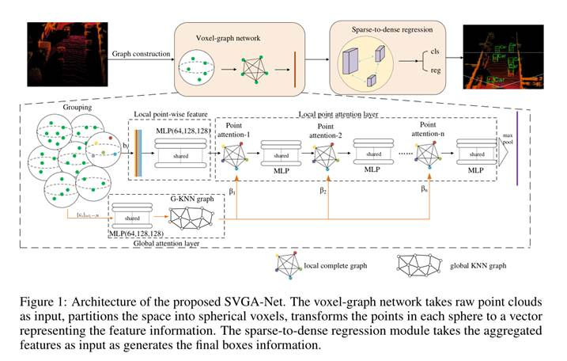
分为两个module写
Voxel-graph network architecture
1. Spherical voxel grouping
点的维度是四维的，然后设置一个半径，得到不同的球形voxel。
2. Local point-wise feature
通过一个mlp，得到一个point-wise的特征表示，上一步的voxel中，有多少个点就有多少个voxel，因此这一步的feature 也是point wise的。
3. Local point-attention layer
将每个点的feature 聚合一下，用attention的方法，公式如下
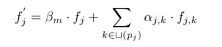
fj是指当前操作点的feature，Bm是全局的graph attention score，ajk是局部的graph attention score
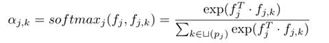
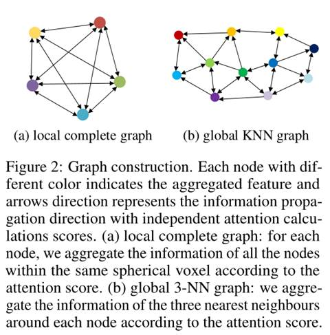
4. Global attention layer
上一步中，如果只有local complete graph的话，那就只考虑了局部特征，因此还需要利用全局信息。也就是上面公式中的Bm的求解。具体方法就是针对每一个voxel，计算其物理的中心，作为一个点，然后在通过一个mlp网络得到initial global 特征，利用knn graph 得到attention score。
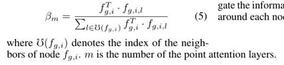
5. Voxel-graph features representation
利用上述的local 和 global的信息，堆叠几个 point attention layers 后通过一个maxpool层，可以获得基于point-wised 的特征。
Sparse to dense regression module
其实本部分没有特别创新的内容，就是结合了不同层级的特征，concatenate一下，最后再进行回归头和分类头的预测。
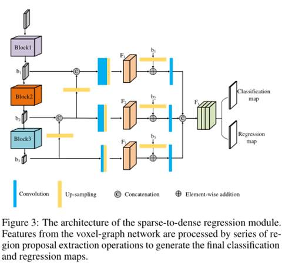
Loss function
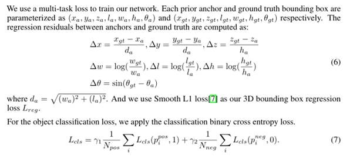
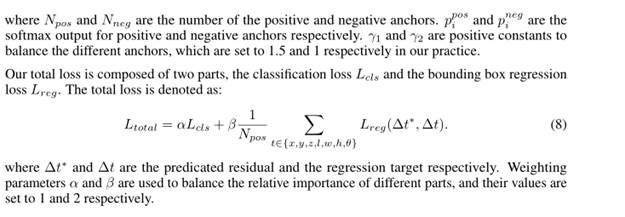
Loss 部分与其他文章完全一样，粘贴原文的内容到这来看了。
Results
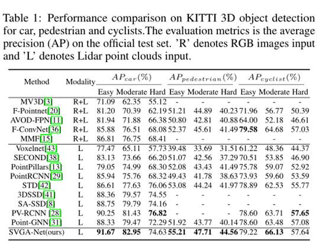
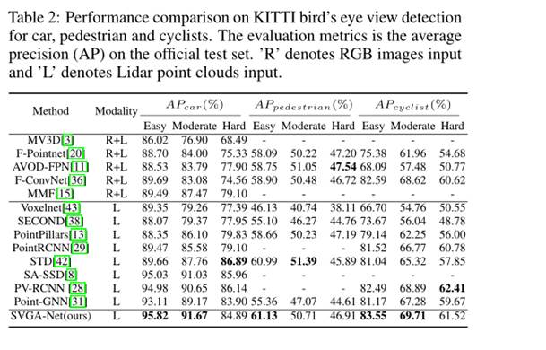
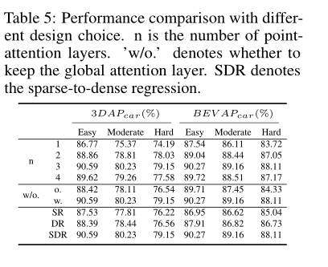
启示：
1. 整篇文章一看就是中国人写的，思路流程清晰，而且聚焦点很明确，是平时写论文和学习应该借鉴的一篇文章。
2. 文章最后的结果还是不错的，但是开头只说是decent的水平，令人怀疑，没有释放源码。
3. 多复现别人的论文，attention加graph的方法可以借鉴，
4. 如果本篇文章有源码的话，是不是可以将input由原来的四维的扩展一下？